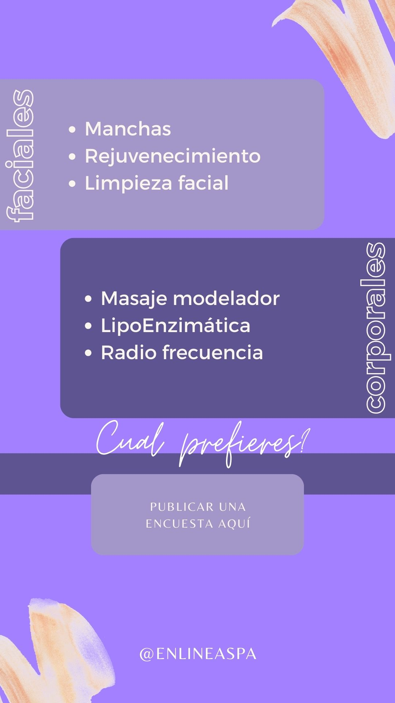
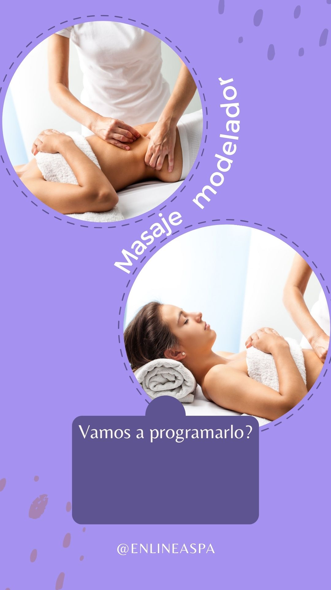
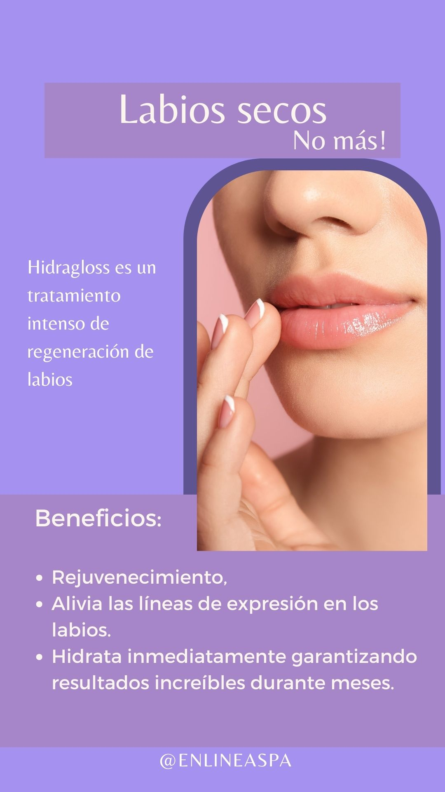
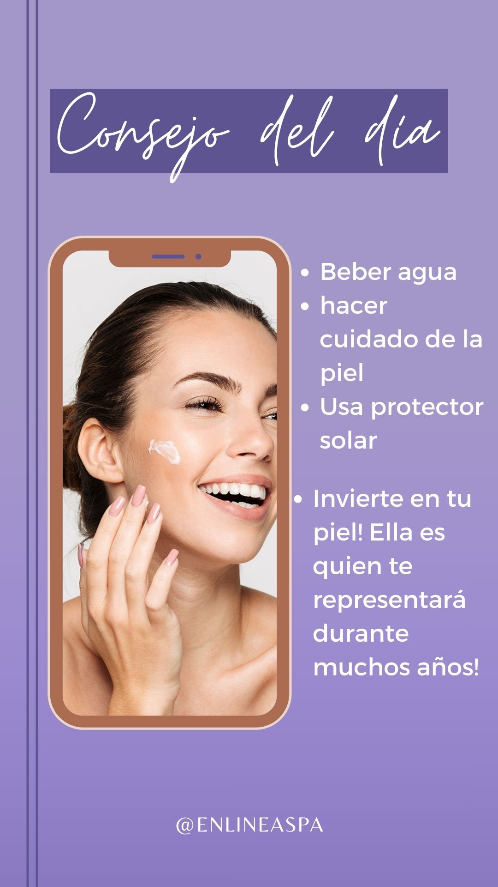
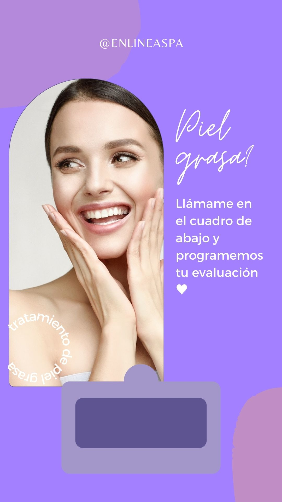
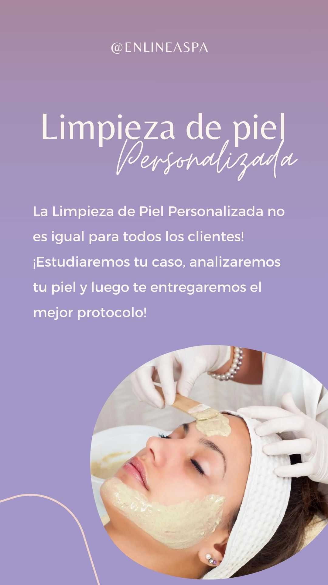

_02.jpg)

Completa el formulario y obtén un descuento del 20% en cualquiera de nuestros tratamientos
¡Si crees que el peeling químico es solo para aclarar manchas, estás equivocada! Este tratamiento va mucho más allá y puede transformar tu piel de varias maneras. Beneficios que nadie te cuenta: Estimula la producción de colágeno, dejando la piel más firme y rejuvenecida. Reduce las cicatrices de acné y mejora la textura de la piel. Controla el exceso de grasa, ayudando a reducir los puntos negros y espinillas. Potencia la hidratación y el resplandor natural de la piel. ¡Pero atención! Para obtener resultados seguros y efectivos, es esencial que el procedimiento lo realice un profesional capacitado y con los cuidados adecuados post- tratamiento. ¿Quieres saber si el peeling químico es adecuado para ti? ¡Envíame un mensaje directo y agenda una evaluación! ¡Tu piel merece este cuidado!
Si piensas que el peeling químico solo sirve para descamar la piel, déjame contarte lo que realmente puede hacer por ti. ¡El tratamiento puede ser personalizado según tus necesidades, asegurando un resultado seguro y efectivo! ¿Quieres saber qué peeling químico es ideal para tu piel? ¡Envíame un mensaje directo y agenda tu evaluación!
Si sientes que tu piel está áspera, sin resplandor y tus productos no están dando resultados, ¡puede que los puntos negros estén bloqueando la absorción de los activos! ¿Por qué sucede esto? Los puntos negros son acumulaciones de grasa, células muertas y residuos en los poros. Cuando la piel no está correctamente limpia y renovada, los productos no pueden penetrar y actuar como deberían. ¿La solución? Elimina las impurezas con una limpieza profunda de la piel. Controla la oleosidad y previene nuevos puntos negros. Mejora la textura de la piel, dejándola suave y saludable. Aumenta la absorción de tus productos, potenciando los resultados. ¿Quieres dejar tu piel limpia, renovada y con resplandor? Envíame un mensaje directo para saber cuál es el mejor tratamiento para ti! ¡Agenda tu sesión y nota la diferencia en tu piel!
Si tus productos no están dando los resultados esperados, tal vez el problema no sea el producto… ¡sino la necesidad de una limpieza profunda! Con la acumulación de impurezas, células muertas y grasa, los activos de los cosméticos no pueden penetrar en la piel como deberían, afectando la hidratación, luminosidad y uniformidad. ¿Por qué la limpieza facial marca la diferencia? Desobstruye los poros, previniendo puntos negros y espinillas. Elimina impurezas y células muertas, dejando la piel más suave. Mejora la absorción de tus productos, potenciando los resultados. Deja la piel iluminada y saludable, con un resplandor natural increíble. Si tu piel necesita un reset para volver a brillar, ¡envíame un mensaje directo y agenda tu sesión! ¡Dale a tu piel el cuidado que se merece!
Si crees que solo existe una manera de mantener la piel firme y joven, déjame contarte un secreto… ¡Es posible estimular el colágeno y prevenir el envejecimiento sin necesidad de agujas! ¿Cómo funciona esto? Existen tratamientos que activan la producción natural de colágeno, mejoran la elasticidad de la piel y previenen arrugas y flacidez, ¡todo de forma segura y no invasiva! Beneficios que te van a encantar: Piel más firme y rejuvenecida. Estímulo natural de colágeno. Reducción de líneas finas y prevención de arrugas. ¡Sin dolor y sin tiempo de recuperación! Si quieres cuidar tu piel de la manera correcta, envíame un mensaje directo y descubre el mejor tratamiento para ti. ¡Agenda tu sesión y comienza la transformación ahora!
Si buscas un tratamiento para rejuvenecer y firmar la piel, ¡debes conocer este procedimiento! Actúa de adentro hacia afuera, activando el colágeno natural y trayendo resultados increíbles. Beneficios que te encantarán: Estimula el colágeno, dejando la piel más firme y joven. Reduce las arrugas finas y previene los signos de envejecimiento. Mejora la textura de la piel, dejándola más uniforme y suave. Efecto lifting inmediato, proporcionando un aspecto más rejuvenecido. ¿Lo mejor? ¡El procedimiento es seguro, indoloro y no invasivo! ¿Quieres saber si es para ti? Envíame un mensaje directo. ¡Agenda tu evaluación y mejora tu piel ahora!
¡La respuesta es Sí! El masaje facial es uno de los tratamientos naturales más poderosos para prevenir líneas finas y mejorar la apariencia de la piel. Al estimular la circulación sanguínea, esta técnica ayuda a oxigenar la piel, promoviendo un aspecto más luminoso y saludable. Además, el masaje facial puede: Relajar los músculos faciales, previniendo la formación de arrugas de expresión. Aumentar la firmeza de la piel, al activar la producción de colágeno. Reducir la hinchazón y mejorar el drenaje, dejando el rostro más tonificado y descansado. ¿Quieres empezar a incorporar esta práctica en tu cuidado diario y mantener tu rostro joven por más tiempo? ¡Agenda una evaluación y te enseño cómo!
El peeling de diamante es uno de los tratamientos más populares en estética porque ofrece una renovación suave y eficaz, ¡sin ese proceso de descamación intensa! Es ideal para quienes buscan una piel más luminosa, suave y con una textura mejorada, ¡sin tiempo de inactividad! Beneficios del Peeling de Diamante: Renovación celular de forma suave. Mejora la textura de la piel. Reduce manchas y acné. Piel más radiante y uniforme. ¿Ya has probado el peeling de diamante? ¡Comenta abajo qué opinas de este tratamiento! Agenda tu evaluación y ven a descubrir los beneficios de este increíble tratamiento para tu piel. ¡Mándame un mensaje directo!
El microagujado es una técnica increíble que estimula la renovación celular, ayuda a suavizar las líneas finas y arrugas, mejora la textura de la piel y reduce manchas. ¡Todo esto para dejarte con una piel más joven, firme y radiante! ¿Por qué te va a encantar? Estímulo a la producción de colágeno. Mejora en la textura y firmeza de la piel. Reducción de manchas, cicatrices y poros dilatados. ¡Agenda tu sesión y comienza la transformación! Mándame un mensaje directo para más detalles.
La rutina de cuidados de la piel es esencial para mantener tu piel saludable y radiante de vitalidad. Sin los cuidados adecuados, la piel puede verse apagada, seca y fatigada, ¡incluso si has tenido una buena noche de sueño! Los beneficios de invertir en tu skincare: Piel más hidratada y luminosa. Reducción de signos de cansancio. Prevención del envejecimiento prematuro. ¡Cuéntame en los comentarios cuáles son los principales cuidados que tienes con tu piel! ¿Quieres aprender a crear la rutina ideal para tu piel? ¡Envíame un mensaje directo y te ayudaré!
La rutina de cuidados de la piel es esencial para mantener tu piel saludable y radiante de vitalidad. Sin los cuidados adecuados, la piel puede verse apagada, seca y fatigada, ¡incluso si has tenido una buena noche de sueño! Los beneficios de invertir en tu skincare: Piel más hidratada y luminosa. Reducción de signos de cansancio. Prevención del envejecimiento prematuro. ¡Cuéntame en los comentarios cuáles son los principales cuidados que tienes con tu piel! ¿Quieres aprender a crear la rutina ideal para tu piel? ¡Envíame un mensaje directo y te ayudaré!
¡La mejor hora para comenzar a tratar los signos de la edad es ahora! Cuanto antes empieces a cuidar tu piel, más suaves y disimuladas pueden volverse esas líneas. No esperes que pase el tiempo, ¡invierte en tratamientos que estimulen la producción de colágeno y mantengan tu piel siempre joven! Beneficios de tratar las líneas finas a tiempo: Suaviza las marcas de expresión. Previene el agravamiento de las arrugas. Mantiene la piel firme y rejuvenecida. ¿Vamos a hablar sobre el tratamiento ideal para ti? ¡Agenda tu evaluación!
¿Ya te has hecho una limpieza facial, pero los puntos negros siempre vuelven? ¡El secreto para mantener tu piel libre de puntos negros por más tiempo va más allá de la limpieza! Para garantizar una piel limpia y sin imperfecciones, es necesario adoptar tratamientos continuos y una rutina de cuidados que ayude a controlar la oleosidad y la obstrucción de los poros. Consejos para mantener la piel limpia y saludable: Tratamientos que regulan la oleosidad. Uso de productos que previenen la acumulación de células muertas. Hidratación y exfoliación adecuadas para tu tipo de piel. ¿Quieres saber más sobre cómo cuidar tu piel de manera eficaz? ¡Agenda tu evaluación!
Muchas veces, el acné no está solo relacionado con lo que aplicas en la piel, sino también con factores internos como la alimentación, el estrés, el desequilibrio hormonal e incluso los productos que estás usando. Aquí algunas posibles causas que quizás no habías considerado: Cambios hormonales: Puede ser un factor importante, especialmente en momentos como la pubertad, embarazo o ciclos menstruales. Alimentación desequilibrada: Alimentos con alto índice glucémico pueden agravar el acné. Productos inadecuados: Algunos productos pueden obstruir los poros, incluso si se usan a diario. Estrés y falta de sueño: El estrés puede desencadenar el acné, y la falta de sueño también afecta la salud de la piel. ¡Los cuidados desde adentro son tan importantes como el skincare diario! Cuida tu alimentación, estrés y sueño para obtener resultados más efectivos. ¿Sufres de acné persistente? ¡Hablemos y encontremos la solución ideal para tu piel! Mándame un mensaje directo.
¡Sé lo frustrante que es lidiar con esto! Pero, ¿sabías que algunos hábitos diarios pueden estar agravando aún más tu melasma? Aquí algunos errores comunes que pueden empeorar las manchas: Exposición solar sin protección: El sol es uno de los principales villanos del melasma, y la protección solar debe ser tu mayor aliada, ¡todos los días, incluso en días nublados! Productos con ingredientes irritantes: Algunos activos como el ácido glicólico o ciertos aceites esenciales pueden sensibilizar la piel, aumentando la pigmentación. No hidratar adecuadamente: La deshidratación puede hacer que la piel sea más vulnerable e incluso estimular el aumento de la pigmentación. Exposición a cambios bruscos de temperatura: Alteraciones rápidas en el clima pueden agravar las manchas ya existentes. Falta de seguimiento profesional: Tratar el melasma con productos aleatorios puede ser un error grave. El acompañamiento de un especialista es fundamental para un tratamiento eficaz. ¿Quieres saber cómo tratar tu melasma de manera segura y eficaz? ¡Mándame un mensaje directo y agenda tu evaluación!
¡La buena noticia es que puedes preservar la juventud de tu piel por mucho más tiempo con algunos cuidados simples y efectivos! Aquí tienes los secretos para mantener tu piel más joven por más tiempo: Hidratación constante Protección solar diaria Estimulación de colágeno Alimentación balanceada Cuidados nocturnos Evitar el estrés y cuidar la mente ¡Envejecer con salud y belleza es una elección! ¡Agenda tu evaluación y descubre qué funciona mejor para mantener tu piel joven y radiante por más tiempo!
¡La respuesta es sí! El colágeno es una proteína esencial para la firmeza y elasticidad de nuestra piel. Con el paso de los años, la producción natural de colágeno disminuye, lo que puede llevar a signos como flacidez y arrugas. Pero la buena noticia es que es posible estimular la producción de colágeno a través de tratamientos estéticos y cuidados diarios. Procedimientos como radiofrecuencia, microaguja y bioestimuladores son excelentes opciones para incentivar la acción del colágeno y asegurar una piel más joven y firme. ¿Quieres saber más sobre cómo hacer que tu piel luzca más joven y saludable? ¡Agenda una evaluación y descubre los tratamientos ideales para tu caso!
El colágeno es esencial para mantener la firmeza, elasticidad y juventud de la piel. Sin embargo, a medida que envejecemos, nuestra producción natural de colágeno disminuye, lo que puede resultar en flacidez, arrugas y pérdida de vitalidad. Pero aquí está el secreto: ¡no necesitamos esperar a que la producción de colágeno disminuya por completo para actuar! La estimulación externa de colágeno, mediante tratamientos como radiofrecuencia, bioestimuladores e incluso cremas con activos potentes, puede potenciar lo que tu cuerpo ya hace y mantener la piel firme por más tiempo. El secreto no está en esperar a que el colágeno se acabe, ¡sino en estimular su producción de forma inteligente y eficaz! ¿Quieres saber cómo? ¡Envíame un mensaje directo y agenda tu evaluación! ¡Cuidemos tu colágeno ahora para asegurar una piel joven por más tiempo!
¡La respuesta es SÍ! El masaje facial es uno de los tratamientos naturales más poderosos para prevenir líneas finas y mejorar la apariencia de la piel. Al estimular la circulación sanguínea, esta técnica ayuda a oxigenar la piel, promoviendo un aspecto más luminoso y saludable. Además, el masaje facial puede: Relajar los músculos faciales, previniendo la formación de arrugas de expresión. Aumentar la firmeza de la piel, al activar la producción de colágeno. Reducir la hinchazón y mejorar el drenaje, dejando el rostro más tonificado y descansado. ¿Quieres empezar a incorporar esta práctica en tu cuidado diario y mantener tu rostro joven por más tiempo? ¡Agenda una evaluación y te enseño cómo!
La verdad es que esta técnica SÍ puede ayudar a reducir medidas, mejorar la circulación y modelar el cuerpo, pero debe hacerse de la manera correcta. Con movimientos intensos y específicos, estimula el metabolismo local y ayuda a eliminar toxinas. ¡Pero atención! Sin constancia y buenos hábitos, los resultados pueden ser limitados. ¿Quieres entender mejor cómo funciona y ver resultados reales? ¡Envíanos un mensaje y agenda tu cita!
Si sientes esa molestia en las piernas, hinchazón en el cuerpo y una sensación de pesadez a lo largo del día, debes saber que esto puede ser causado por la acumulación de líquidos y la mala circulación. ¡Pero la buena noticia es que hay solución! Con la técnica adecuada, te ayudo a aliviar estos síntomas y a brindarte una sensación de ligereza inmediata. Imagina sentir tus piernas desinflamadas, tu cuerpo más liviano y tu bienestar renovado… ¡Eso es lo que mi masaje puede ofrecerte! ¡No esperes más! Agenda tu cita ahora y siente la diferencia desde la primera sesión.
¿Sabías que el drenaje linfático va mucho más allá de la estética? ¡Esta increíble técnica ayuda a reducir la hinchazón de forma natural, mejora la celulitis, activa la circulación y aún te brinda una sensación de ligereza inmediata! Si sufres de retención de líquidos, piernas pesadas o quieres mejorar la apariencia de tu piel, ¡esta es la elección perfecta! ¡Agenda tu sesión y siente la diferencia en tu cuerpo y bienestar! ¡Tu cuerpo merece este cuidado!
El drenaje linfático no es solo un masaje, ¡es un tratamiento completo! Si crees que el drenaje es solo un momento de relajación, debes saber que sus beneficios van mucho más allá. Mejora el flujo sanguíneo, reduciendo la sensación de pesadez en las piernas. Estimula la eliminación de líquidos retenidos, brindando ligereza. Reduce el aspecto de "piel de naranja" al desinflamar y oxigenar la piel. Ayuda al cuerpo a eliminar impurezas, haciéndote sentir más saludable. ¡Sales de la sesión renovada, más liviana y relajada! ¡Tu cuerpo merece este cuidado! Agenda tu sesión y siente la diferencia desde la primera sesión.
¿Quieres reducir medidas sin cirugía? La lipoenzimática es un procedimiento seguro y mínimamente invasivo que actúa directamente en las células de grasa, ayudando a tu cuerpo a eliminarlas de forma natural. ¿Cómo funciona? Las enzimas aplicadas descomponen las células de grasa, que luego son eliminadas por el organismo. ¿El resultado? ¡Menos volumen y un contorno más definido! ¡Cuanto antes comiences, más rápido verás la diferencia! Envíame un mensaje para agendar tu evaluación y dar el primer paso hacia la transformación.
¡Adiós, grasa localizada! Y lo mejor: ¡sin cirugía! Si quieres reducir medidas y definir tu cuerpo de forma segura y efectiva, ¡tenemos los tratamientos ideales para ti! Reducción de grasa localizada. Procedimientos seguros y mínimamente invasivos. Resultados visibles en pocas sesiones. ¡Ven a conocer nuestras técnicas y elige la mejor para ti! Agenda una evaluación y descubre cómo lograr el cuerpo que deseas.
La lipoenzimática es uno de los procedimientos más deseados para quienes quieren reducir medidas de forma rápida y efectiva, ¡sin necesidad de cirugía! Descompone las células de grasa. Reduce medidas de forma segura. Resultados visibles a partir de la 3ª sesión. ¡Agenda tu evaluación y da el primer paso para transformar tu cuerpo!
La criolipólisis es un procedimiento increíble que congela las células de grasa, haciendo que el cuerpo las elimine de forma NATURAL y segura. Reduce medidas con precisión. ¡Sin cirugía, sin cortes! Resultados visibles después de algunas semanas. ¿Lo mejor de todo? ¡La grasa eliminada no vuelve! Agenda tu evaluación y descubre cómo lograr el cuerpo de tus sueños.
Criolipólisis: ¡el frío que destruye la grasa! La criolipólisis es un tratamiento innovador que utiliza el frío para destruir las células de grasa, permitiendo que el cuerpo las elimine de forma natural. ¡Sin cirugía, sin dolor! Reducción de medidas de manera eficaz y segura. Resultados duraderos y visibles en pocas semanas. ¿Quieres lograr un cuerpo más definido y libre de grasa localizada? ¡Agenda tu evaluación ahora!
¡Tenemos los mejores tratamientos para que consigas el cuerpo de tus sueños de manera segura y eficaz, sin necesidad de intervenciones invasivas! Reduce medidas rápidamente. Elimina la grasa localizada. Siéntete más ligera y renovada. Resultados duraderos y naturales. Agenda tu evaluación ahora y descubre cuál tratamiento es ideal para ti.
¡Basta de pasar por procedimientos invasivos o recurrir a métodos que no traen los resultados deseados! Con nuestros tratamientos seguros y efectivos, lograrás el cuerpo de tus sueños sin necesidad de cirugía. Imagina reducir la grasa localizada, modelar tu cuerpo y mejorar la textura de tu piel de forma natural, sin dolor y sin necesidad de cortes. ¡Lo mejor de todo es que los resultados son visibles en pocas sesiones y duraderos, dejándote aún más confiada y renovada! Agenda tu evaluación y ven a descubrir qué tratamiento es ideal para ti. ¡Tu cuerpo merece este cuidado!
¡Estos son problemas que muchas enfrentan, pero la buena noticia es que hay solución! Con los tratamientos adecuados, es posible mejorar la apariencia de la piel, reducir la celulitis y combatir la flacidez, dejando tu cuerpo más firme y tonificado. Resultados visibles en pocas sesiones. Sin dolor, sin cirugía. Piel más suave y firme. Agenda tu evaluación y descubre cómo podemos transformar tu cuerpo de forma natural y efectiva.
¿Sabías que existen tratamientos increíbles y efectivos para reducir la grasa localizada y lograr un cuerpo más definido? Aquí están los más utilizados y que ofrecen resultados visibles y duraderos: Lipoenzimática – Reduce la grasa localizada y define el contorno del cuerpo con la aplicación de enzimas que descomponen las células de grasa. Criolipólisis – El frío que elimina la grasa localizada congelando las células de grasa, que luego son eliminadas de forma natural por el cuerpo. Drenaje Linfático – Mejora la circulación, combate la retención de líquidos y proporciona una sensación de ligereza, ayudando a reducir la hinchazón y la celulitis. Carboxiterapia – Estimula la circulación y la producción de colágeno, combatiendo la celulitis y la flacidez al mismo tiempo. ¡Estos tratamientos se pueden hacer de forma mínimamente invasiva, sin necesidad de cirugía, y con resultados increíbles! Agenda tu evaluación y descubre cuál tratamiento es ideal para ti.
La radiofrecuencia es uno de los mejores tratamientos para quienes desean estimular la producción de colágeno y lograr una piel más firme, joven y tonificada. Con la radiofrecuencia, activas las capas más profundas de la piel, promoviendo un efecto lifting natural que mejora la textura y elasticidad de tu piel, combatiendo la flacidez de manera eficaz y sin cirugía. Aumento de la firmeza de la piel. Reducción de la flacidez. Piel más joven y rejuvenecida. Tratamiento rápido y sin dolor. Agenda tu evaluación y ven a descubrir cómo la radiofrecuencia puede transformar tu piel.
Si buscas una piel más firme y rejuvenecida, ¡la radiofrecuencia es la solución ideal! Este tratamiento utiliza tecnología avanzada para estimular la producción de colágeno, dejando tu piel más tonificada y joven. Estimula la producción de colágeno. Mejora la firmeza y elasticidad de la piel. Reduce la flacidez y combate el envejecimiento prematuro. ¡Sin dolor, sin cirugía! Agenda tu evaluación y descubre cómo la radiofrecuencia puede transformar tu piel.
PumpUP: ¡el secreto para glúteos más firmes y modelados! ¿Quieres levantar y modelar tus glúteos de manera eficaz? ¡PumpUP es la solución! Este tratamiento no solo aumenta la firmeza, sino que también mejora la circulación, trayendo resultados visibles desde las primeras sesiones. Glúteos más modelados y definidos. Aumento de la firmeza y tonificación. Mejora de la circulación y el aspecto de la piel. ¿Ya has probado PumpUP? ¡Cuéntame en los comentarios si tienes curiosidad por ver los resultados! Agenda tu evaluación y ven a sentir los resultados en tu piel.
¿Qué tal lograr glúteos más firmes y levantados de manera rápida y eficaz? Con PumpUp, ¡alcanzarás resultados visibles y sentirás la diferencia desde las primeras sesiones! Levanta y modela los glúteos. Aumenta la firmeza y tonificación. Mejora la circulación y el aspecto de la piel. ¿Estás lista para darle ese empuje a tus glúteos? ¡Cuéntame en los comentarios qué es lo que más te gustaría mejorar de tu cuerpo! Agenda tu evaluación y ven a transformar tu cuerpo con PumpUp.
¡Bumbum definido con PumpUp! ¿Quién no sueña con un bumbum tonificado y definido, verdad? PumpUp es el tratamiento perfecto para quienes desean estimular los músculos y mejorar la circulación, dejando su bumbum más levantado y firme. Bumbum más tonificado y definido. Estimula los músculos y mejora la circulación. Resultados visibles desde las primeras sesiones. ¿Y tú, ya has pensado en invertir en este tratamiento para lograr el bumbum de tus sueños? ¡Cuéntame en los comentarios! Agenda tu evaluación y ven a transformar tu bumbum con PumpUp.
¿Sabías que la drenaje linfático puede ser la solución para muchos malestares del cuerpo? Aquí te dejamos algunas señales de que tu cuerpo está pidiendo este tratamiento esencial. Si te identificas con alguno de estos síntomas, la drenaje linfático puede ser la clave para mejorar tu calidad de vida y aliviar estos malestares. ¿Has sentido alguno de estos síntomas? ¡Cuéntame en los comentarios! Agenda tu sesión y ven a sentir la ligereza que solo el drenaje linfático puede proporcionar.
¿Quieres lograr un cuerpo más definido y tonificado? ¡La masoterapia modeladora es el tratamiento perfecto para quienes desean reducir medidas, mejorar el contorno corporal y hacer que las curvas sean aún más marcadas! Redefine las curvas y contornos del cuerpo. Resultados visibles en pocas sesiones. Estimula la circulación y mejora la firmeza de la piel. ¿Quién ya ha probado la masoterapia modeladora? ¡Cuéntanos en los comentarios qué más te motiva a comenzar el tratamiento! Agenda tu sesión y ven a experimentar esta transformación.
¡Va más allá de la apariencia! – El drenaje linfático mejora tu salud y bienestar de una manera increíble. Mejora la circulación sanguínea. Alivia la retención de líquidos. Reduce la hinchazón y los edemas. Ayuda a combatir el estrés y la tensión. Aumenta la sensación de ligereza y disposición. ¿Quién más ha notado los beneficios del drenaje linfático? ¡Cuéntanos en los comentarios! Vamos a agendar tu sesión y cuidar de tu salud y bienestar.
¡Sí, lo leíste bien! Es posible conquistar glúteos firmes y levantados sin tener que pasar horas en el gimnasio. Con los tratamientos adecuados, puedes alcanzar el trasero de tus sueños de forma rápida y eficaz, sin necesidad de pesas o ejercicios intensos. Glúteos firmes y tonificados. Resultados visibles desde las primeras sesiones. Sin dolor y sin sufrimiento. ¡Agenda tu sesión y ven a ver los resultados por ti misma! ¿Estás lista para darle ese toque a tus glúteos? Cuéntame en los comentarios. ¡Agenda ahora y conquista los glúteos de tus sueños!
¡Es hora de decir adiós definitivamente a esa grasita que insiste en quedarse! Con la criolipólisis, puedes eliminar la grasa localizada de forma eficaz y sin cirugía. Resultados visibles después de algunas sesiones. Proceso rápido y no invasivo. Ideal para áreas específicas de grasa. ¿Quién más ha escuchado hablar de la criolipólisis? ¡Cuéntame en los comentarios si también quieres deshacerte de la grasa localizada! Agenda tu evaluación y ven a conocer este increíble tratamiento.
¿Tu cuerpo está sobrecargado? Un detox puede ser justo lo que necesitas para transformar tu salud y sentir más energía en tu día a día. Elimina toxinas. Mejora la digestión y el metabolismo. Aumenta la energía y el bienestar. Desintoxica el organismo de forma natural. ¿Qué tal darle un reseteo a tu cuerpo y sentirte renovada? ¡Cuéntame en los comentarios cómo cuidas de tu cuerpo! Agenda tu sesión de detox y siente la transformación en tu salud.
Si quieres decir adiós a la celulitis y tener un cuerpo más modelado y tonificado, ¡tenemos la técnica que es la clave para resultados increíbles! Elimina la celulitis y mejora la apariencia de la piel. Modela el cuerpo y redefine las curvas. Resultados rápidos y eficaces. ¿Quieres saber más sobre este tratamiento y cómo puede transformar tu cuerpo? ¡Envíame un mensaje directo para más detalles!
¡El peeling corporal puede ser la solución que buscas para transformar tu piel! Ayuda a renovar la textura y mejorar el aspecto de manchas y cicatrices, dejando la piel más lisa y uniforme. Reduce manchas y cicatrices. Mejora la textura de la piel. Deja la piel más suave y radiante. ¿Has pensado en darle un impulso a tu piel? ¡Envíame un mensaje directo para saber más sobre el peeling corporal y agendar tu sesión! ¡Transforma tu piel con el peeling corporal!
¿Haces de todo y esa grasita insiste en quedarse? ¡No te preocupes! ¡Existe una solución eficaz para eliminar la grasa localizada de una vez por todas, sin necesidad de dietas restrictivas o ejercicios interminables! Tenemos para ofrecerte los tratamientos más avanzados y procedimientos increíbles. ¡Envíame un mensaje directo para agendar tu evaluación y descubrir la solución ideal para ti! ¡Di adiós a la grasa localizada y conquista el cuerpo que mereces!
Existen tratamientos increíbles que pueden ayudar a mejorar la apariencia de la piel y reducir la celulitis de manera eficaz, como: Radiofrecuencia: Estimula la producción de colágeno, mejora la firmeza y reduce la celulitis, dejando la piel más lisa y tonificada. Carboxiterapia: Inyección de gas carbónico bajo la piel, que ayuda a mejorar la circulación y reducir la celulitis, además de promover el rejuvenecimiento. Drenaje Linfático: Ayuda a reducir la retención de líquidos, la hinchazón y mejora la circulación, contribuyendo a la disminución de la celulitis y proporcionando una sensación de ligereza. Masaje Modelador: Técnica de presión que ayuda a romper las células de grasa y reduce la apariencia de la celulitis, remodelando el cuerpo y tonificando la piel. ¿Quieres saber más sobre qué tratamiento es ideal para ti? ¡Envíame un mensaje directo para más detalles! ¡Agenda tu evaluación y transforma la apariencia de tu piel!
¡Sí, puedes suavizar la textura, el tono y hasta la visibilidad de tus estrías con tratamientos estéticos efectivos! Existen tratamientos que ayudan a reducir la apariencia de las estrías, haciendo que se vuelvan menos visibles y dejando tu piel más uniforme y tonificada. ¿Quieres saber más sobre cómo mejorar la apariencia de tus estrías? ¡Envíame un mensaje directo y hablemos sobre el tratamiento ideal para ti! ¡Agenda tu evaluación y da el primer paso hacia una piel más uniforme!
Con los tratamientos adecuados, puedes mejorar la elasticidad de la piel, combatir la flacidez y lograr un resultado natural y duradero. Firmeza y tonificación de la piel. Aumento de la producción de colágeno, esencial para mantener la piel joven y resistente. Mejora de la textura de la piel, dejándola más suave y uniforme. Resultados visibles en pocas sesiones, con mínimo malestar y sin necesidad de recuperación. Ofrecemos tratamientos seguros y mínimamente invasivos, diseñados para garantizar tu seguridad y los mejores resultados. ¿Quieres saber cómo podemos ayudarte a tener una piel más firme y rejuvenecida? ¡Envíame un mensaje directo para agendar tu evaluación!
Algunas áreas del cuerpo realmente acumulan grasa más rápido y de forma más persistente, como en el abdomen y los brazos. Esto puede estar influenciado por diversos factores como genética, hormonas y hasta el estilo de vida. ¡Pero la buena noticia es que tengo el tratamiento adecuado para reducir esas grasitas localizadas y ayudarte a modelar tu cuerpo de manera eficaz! Reducción de grasa localizada en áreas específicas. Mejora de la circulación y aceleración del metabolismo. Resultados naturales y duraderos, con tratamientos mínimamente invasivos y sin necesidad de cirugía. Si quieres saber cómo eliminar la grasa localizada y conquistar el cuerpo de tus sueños, ¡envíame un mensaje directo y agenda tu evaluación! ¡Vamos juntas a alcanzar tu objetivo!
Si sientes que pierdes peso, mas no ganas firmeza, tal vez estés ignorando un factor muy importante: la falta de estímulo para la producción de colágeno y la falta de tonificación muscular durante el proceso de emagrecimiento. Cuando emagrecemos, es posible que la piel pierda elasticidad y la musculatura se debilite, resultando en la flacidez. Mas la buena noticia es que existe una forma de recuperar la firmeza y el contorno corporal mesmo después de la pérdida de peso! La solución para la flacidez: Estimulación del colágeno: Tratamientos que activan la producción de colágeno, mejorando la firmeza y la elasticidad de la piel. Tonificación muscular: Técnicas que ayudan a fortalecer y tonificar los músculos, dando forma y sustentación al cuerpo. Mejora de la circulación: Estimular la circulación sanguínea ayuda a promover una piel más firme y saludable. No dejes que la flacidez te impida aprovechar tu emagrecimiento! Me chama no direct para descubrir el tratamiento ideal para recuperar la firmeza de tu piel!

Alivia el estrés y la tensión con nuestro masaje terapéutico completo. Una experiencia de relajación profunda que renueva tu energía.

Elimina contracturas y alivia dolores musculares de forma profesional. Técnicas especializadas para tu bienestar.

Combina técnicas de masaje con aceites esenciales para una experiencia única de relajación y bienestar.

Tratamientos especializados para aliviar tensiones y mejorar tu bienestar general.

Ideal para deportistas y personas activas que buscan recuperación muscular.

Combina técnicas de masaje con tratamientos para modelar tu figura.
Reserva tu momento de bienestar y belleza
Ubicación: San Pedro de los Milagros, Antioquia
Teléfono: (310) 370-97-31 -- (311) 631-92-94
Correo: info@enlineaspa.com
Horario: Lunes a Sábado 9:00 AM - 7:00 PM
📍 Coordenadas: 6.461133, -75.555624